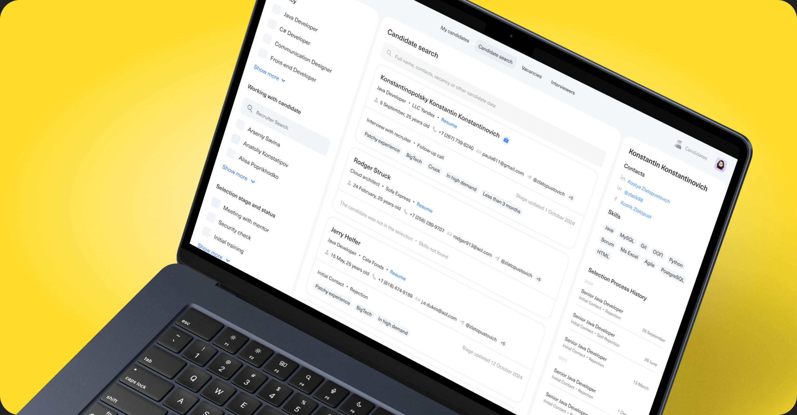
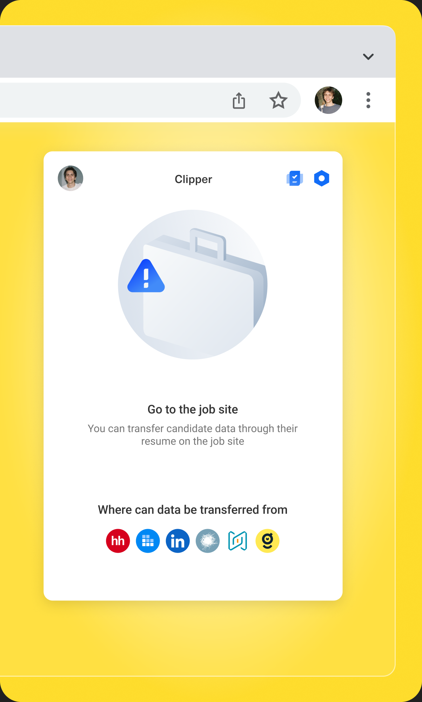
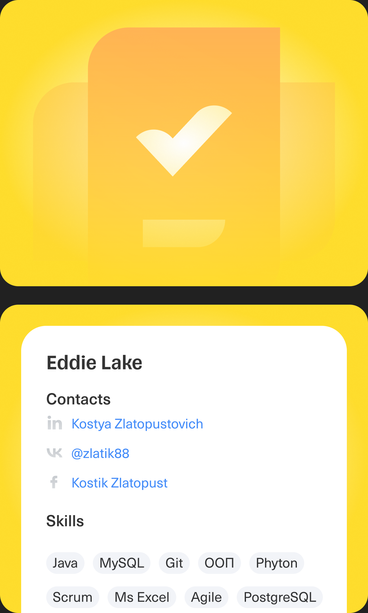
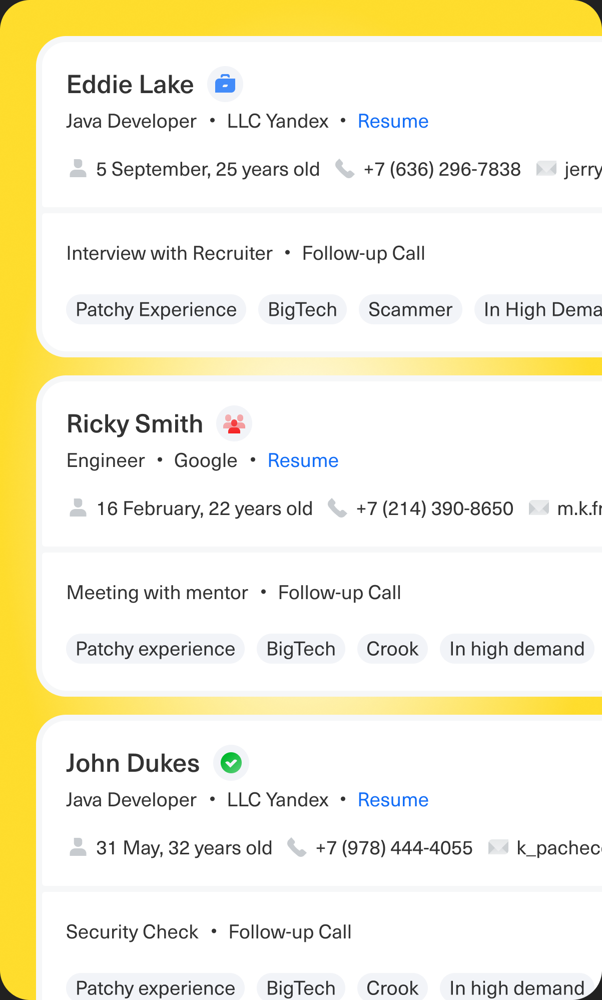
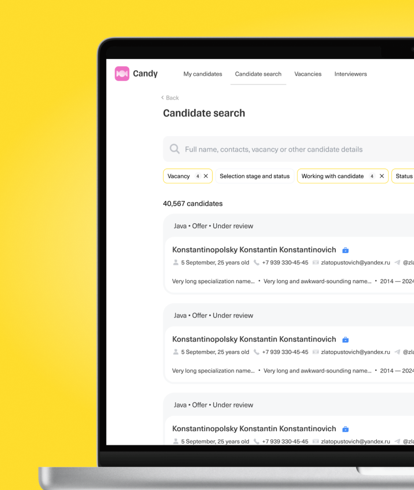
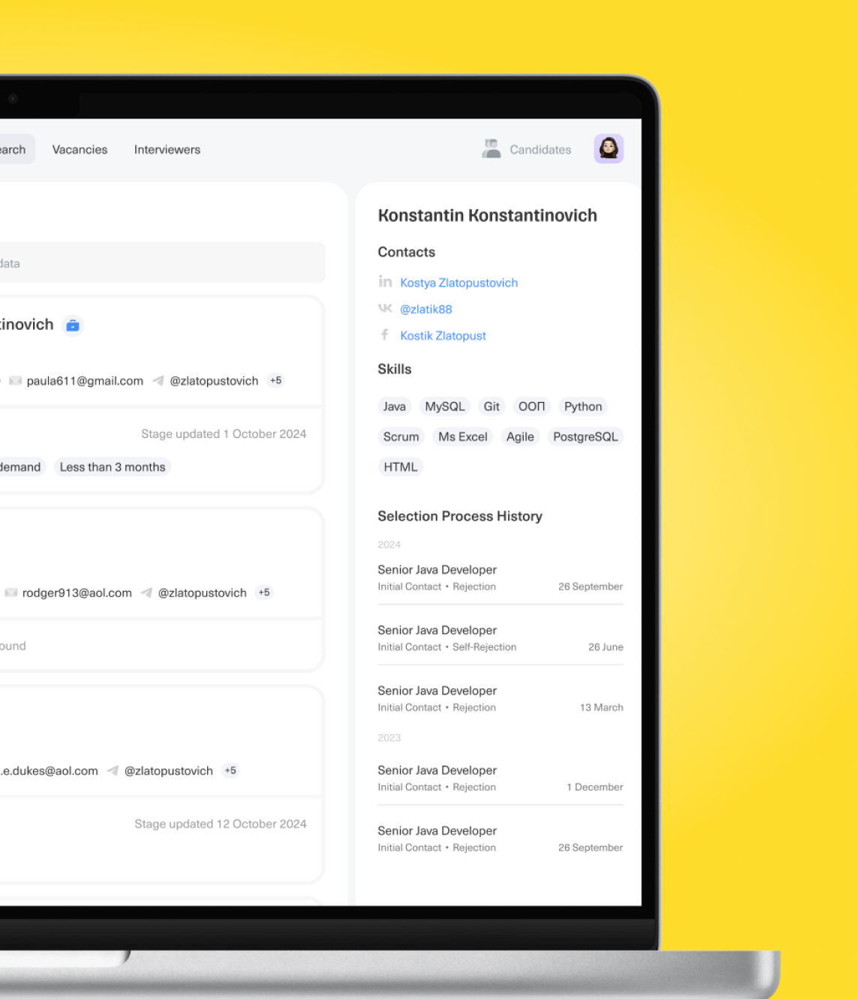
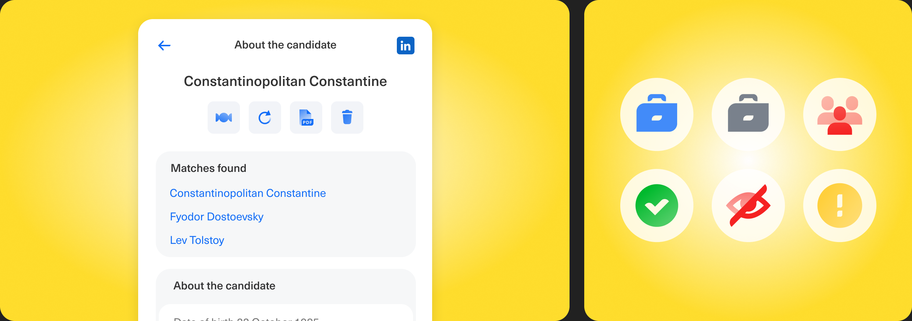
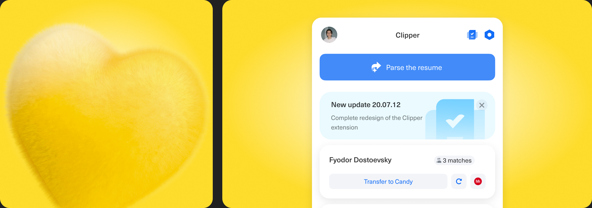
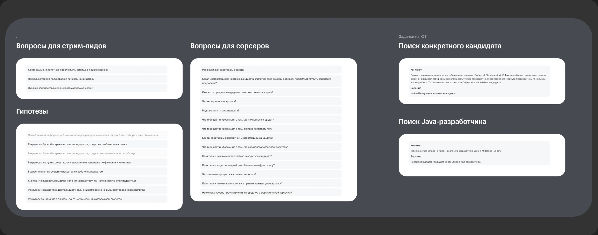

The recruiter's candidate database is a tool for selecting candidates from the company's internal talent pool. In this case, we redesigned the candidate card interface to reduce the time recruiters spend working with each individual candidate



Problem
Recruiters take too long to select candidates
Business goal
Reduce the time to close vacancies and increase the conversion of candidates through the funnel


Role and Responsibility
I have been working as product designer. The product was under my responsibility, I worked in a team of PM, analyst and development team


Research
In total, we conducted 12 interviews, where we took 5 people from each audience and two stream leads, where we first asked them questions and then gave them tasks: find a candidate based on input data, or just find a suitable specialist based on a general description. This way we wanted to check how they would search for candidates and how the actions they perform would differ (if they would)
Conclusions from the research
Recruiters favor the card view for its convenience and detail but want to customize the displayed data to emphasize experience, stack, and skills. Overall, they desire flexible cards, precise filtering, and a simpler search process.
Tools
Figma Prototypes

Why we decided to stay at this solution
During the research, we conducted A/B/C testing, where we understood what exactly recruiters want. From the feedback, it was clear which of the options was the most successful, so we decided to develop it
Results
We designed, researched and shipped new design of recruiters database
- Reduced Selection time by 2 days
- Decreased % of «Undesirable candidates» from 30% to 25%